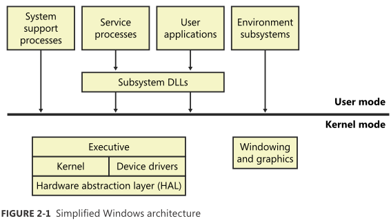

Windows内核模式组件
| Ntoskrnl.exe | 执行体和内核 |
| Ntkrnlpa.exe(仅用于32位系统) | 执行体和内核， 支持物理地址扩展(PAE)， 使用32位系统可寻址多达64GB物理内存 |
| Hal.dll | 硬件抽象层 |
| Win32k.sys | Windwos子系统的内核模式部分 |
| Ntdll.dll | 内部支持函数， 以及执行体函数的系统服务分发存根 |
| Kernel32.dll, Advapi32.dll | Windwos的核心子系统 |
| User32.dll, Gdi32.dll | Windwos的核心子系统 |
Windows客户机和服务器版本差异
- 核心文件都是相同的， 只是不同的版本会做不同的优化处理
- 在[HKEY_LOCAL_MACHINE\SYSTEM\CurrentControlSet\Control\ProductOptions]中ProductType表示本机是服务器or客户机
- 用户模式下调用GetVersionEx， 设备驱动程序中调用RtGetVersion得到上面的值
- 判断当前运行的是哪个版本的Windows系统， 用户模式调用VerifyVersionInfo, 设备驱动程序调用RtVerifyVersionInfo
- Version Helper functions https://msdn.microsoft.com/en-us/library/windows/desktop/dn424972%28v=vs.85%29.aspx
Windows总体架构

环境子系统
- 环境子系统将基本的Windows执行体系统的某个子集暴露给应用程序， 每个子系统都提供对Windows原生服务的一个不同子集的访问能力。
- 每个可执行映像(.exe)都被绑定到一个(且唯一)的子系统上， 映像运行时， 负责创建进程的代码会检查该映像头部的子系统类型代码。VC++中， link的/SUBSYSTEM修饰每个可以指定该类型
- 用户应用程序并不直接调用Windows的系统服务， 而是通过一个或者多个子系统DLL来进行
| Windows子系统 | 实现Windows API函数， 基础子系统 |
| SUA子系统(Subsystem for UNIX-based Application | 实现SUA API函数， 调用Windows子系统完成IO |
| POSIX子系统 |
-
应用程序调用子系统时， 可能会发生下述三件事件之一：
- 该函数完全由该子系统DLL实现， 在用户模式下运行， 如GetCurrentProcess()
- 该函数要求调用Windows执行体一次或多次， 如ReadFile和WriteFile函数
- 该函数要求在环境子系统进程中完成某些工作
- 子系统是由会话管理器(Session Manager, Smss.exe)进程启动起来的， 启动信息保存在[HKLM\SYSTEM\CurrentControlSet\Control\Session Manager\Subsystems]中
-
Windows子系统组成
- 对于每个会话， 环境子系统进程(csrss.exe)都有一个实例
- 内核模式设备驱动程序(Win32k.sys)
- 控制台宿主进程(Conhost.exe)， 提供对控制台(字符环境)应用程序的支持
- 子系统DLL(Kernel32.dll， Advapi32.dll, User32.dll, Gdi32.dll) ， 将已文档化的Windows API函数转译成Ntoskrnl.exe和Win32k.sys中恰当的且绝大多数未文档化的内核模式系统服务调用。
- 图形设备驱动程序， 与硬件相关的图形显示器驱动程序、打印机驱动程序和视频微端口驱动程序
Ntdll.dll
-
Ntdll.dll是一个特殊的系统支持库， 主要用于子系统DLL， 包含两种类型的函数：
- 系统服务分发存根(stub), 它们会调用Windows执行体的系统服务
- 内部支持函数， 供子系统、子系统DLL以及其它的原生映像文件使用
Windows执行体
- Windows执行体是Ntoskrnl.exe中的上层(内核是其下层)
-
执行体包含以下类型的函数：
- 可以用户模式下调用的导出函数， 称为系统服务并通过Ntdll被导出。
- 可通过DeviceIoControl函数来调用的设备驱动程序函数。
- 只能在内核模式下调用的导出函数， 在WDK中文档化
- 在内核模式下调用， 但未在WDK中文档化在导出函数
- 定义为全局符号但是未导出的函数
- 未定义全局符号， 而是在一个模块内部的函数
-
执行体包含以下主要组件：
- 配置管理器
- 进程管理器
- 安装引用管理器
- I/O管理器
- 即插即用管理器
- 电源管理器
- 内存管理器
- 逻辑预取器
- Windows驱动程序模型的WMI例程
内核
- 内核是Ntoskrnl.exe中的一组函数以及对于硬件体系架构的低层支持(比如中断和异常分发)构成的。
- 内核提供了一组定义明确的、可预知的操作系统低层原语和实现了操作系统的基本机制。
- 它几乎将所有的策略决定都留给了执行体， 唯一的例外是线程调试和分发， 是由内核自己来实现的
- 内核实现了一组简单的对象， 称为内核对象(kernel object), 帮助内核控制好中心处理过程， 并且支持执行体对象的创建工作。
-
内核对象种类：
- 控制对象(control object) 建立了有关控制各种操作系统功能的语义， 包括APC对象、DPC对象、及IO管理器使用的一些对象(中断对象)
- 分发器对象(dispatcher object) 融合了同步的能力， 可以改变或者影响线程的调度， 包括内核线程、互斥体、事件、内核事件对、信号量、定时器等。执行体利用内核函数来创建和维护内核对象实例， 并且构建更加复杂的、提供给用户模式的对象。
系统进程
-
以下系统进程会出现在每一个Windows系统中
- Idle进程 为每个CPU包含一个对应的线程， 战胜空闲的CPU时间
- System进程 包含大多数的内核模式系统线程
- 会话管理器 Smss.exe
- 本地会话管理器 Lsm.exe
- Windows子系统 Csrss.exe
- 会话0初始化 Wininit.exe
- 登录进程 Winlogon.exe
- 服务控制管理器 Services.exe
- 本地安全认证服务器 Lsass.exe
comments powered by Disqus